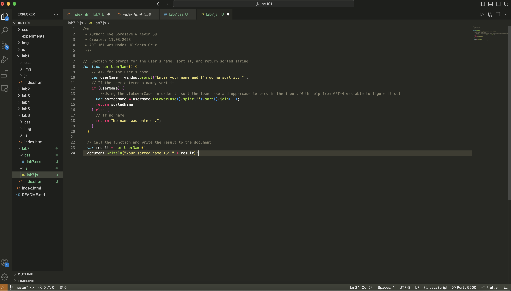
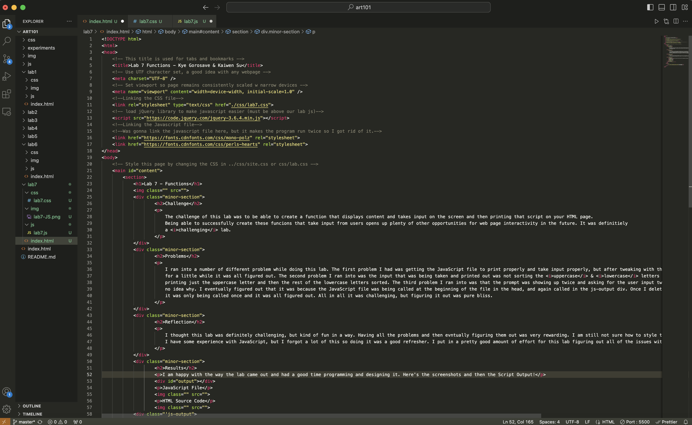

Lab 7 - Functions
Challenge
The challenge of this lab was to be able to create a function that displays content and takes input on the screen and then printing that script on your HTML page. Being able to successfully create these funcions that take input from users opens up plenty of other opportunities for web page interactivity in the future. It was definitiely a challenging lab.
Problems
I ran into a number of different problem while doing this lab. The first problem I had was getting the JavaScript file to print properly and take input properly, but after tweaking with things for a little while it was all figured out. The second problem I ran into was the input that was being taken and printed out was not sorting the uppercase & lowercase letters and instead printing just the uppercase letter and then the rest of the lowercase letters sorted. The third problem I ran into was that the prompt was showing up twice and asking for the user input twice and I had no idea why. I eventually figured out that it was because the JavaScript file was being called at the beginning of the file in the head, and again called in the js-output div. Once I deleted the head script src it was only being called once and it was all figured out. All in all it was challenging, but figuring it out was pure bliss.
Reflection
I thought this lab was definitely challenging, but kind of fun in a way. Having all the problems and then evntually figuring them out was very rewarding. I am still not sure how to style the JS output, but I'll figure it out eventually. I have some experience with JavaScript, but I forgot a lot of this so doing it was a good refresher. I put in a pretty good amount of effort for this lab figuring out all of the issues with my JavsScript and then styling things out afterwards.
Results
I am happy with the way the lab came out and had a good time programming and designing it. Here's the screenshots and then the Script Output!
JavaScript File
HTML Source Code
